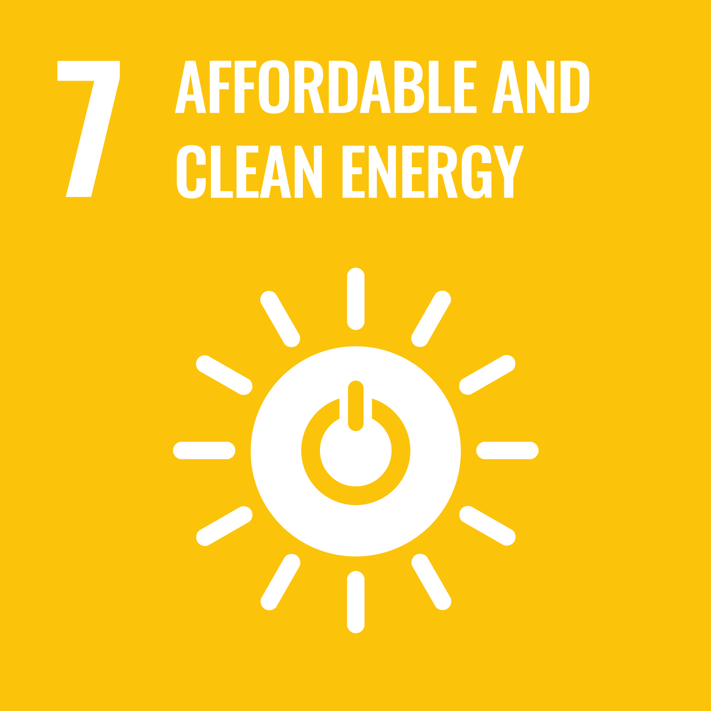
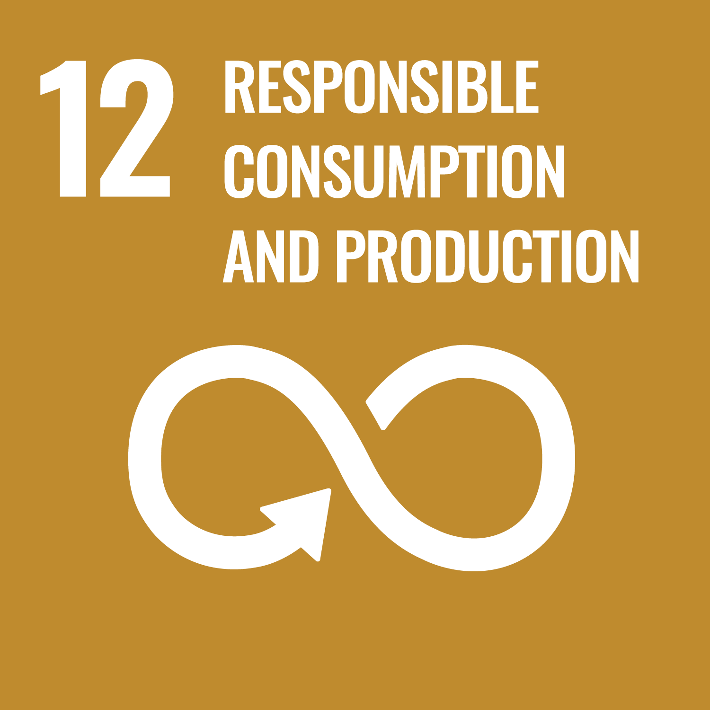

Low Carbon Transformation
Green Environments
Low Carbon Transformation







Sustainable Design and Construction
ArchSD strives to minimise adverse environmental impacts associated with the built environment by adopting green and innovative design and construction approaches, and by integrating low-carbon, energy-efficient, and environmentally responsible principles into building design and development.
Carbon Neutrality Strategic Framework
To align with Hong Kong’s Climate Action Plan 2050 and its Energy Saving and Green Buildings Strategy, we have formulated the “3A Strategy”, namely Amplify, Accelerate and Act Together under our Carbon Neutrality Strategy Framework to speed up the progress in decarbonising Hong Kong’s built environment.
| Financial Year | 2023 | 2024 | 2025 |
|---|---|---|---|
| Direct Emissions (Scope 1) (Tonnes of CO2e) |
205 | 204 | 200 |
| Energy Indirect Emissions (Scope 2) (Tonnes of CO2e) 1 |
1 818 | 1 768 | 1 789 |
| Other Indirect Emissions (Scope 3) (Tonnes of CO2e) 2 |
37 | 17 | 23 |
| Total (Tonnes of CO2e) |
2 061 | 1 989 | 2 012 |
1CO2 emissions intensities of CLP Power and HK Electric were used to calculate these emissions.
2The figures were calculated by measuring the actual usage of fuel in mobile sources and paper consumption (A3 and A4) and wastepaper collected for recycling at the QGO.
Materiality Assessment
To identify the material ESG topics that have the greatest impacts on the ArchSD and our stakeholders, we undertake an annual comprehensive materiality assessment process according to the reporting principles of the GRI Standards.
This year’s materiality assessment was conducted by an independent consultant, who used a quantitative approach to identify the material topics, following the steps outlined in GRI 3: Material Topics 2021.
The year’s materiality assessment took into account the results of a questionnaire survey conducted in June 2025 among 6 stakeholder groups who have significant impacts on ArchSD’s operations or could be significantly affected by our operations. These stakeholder groups included the following:
Material issues for the organisation as well as industry-specific challenges and global megatrends were identified to produce 20 material ESG topics for this year’s Report. A total of 719 responses were received and the materiality results are shown in the table below:
Importance levels
High
Mid
Low
| Categories | Material topics | Importance |
|---|---|---|
| Environment | Energy mix and efficiency | High |
| Biodiversity and ecological impacts | Medium | |
| Management of greenhouse gas (GHG) emissions and related environmental risks | Medium | |
| Resource efficiency and circularity | Medium | |
| Water efficiency and recycling | Low | |
| Social | Health and safety for all | High |
| User health and safety in using the facilities | High | |
| Employment practices, welfare and rights | Medium | |
| Community engagement | Low | |
| Diverse and comprehensive staff training and development | Low | |
| Governance | Ethical practices | High |
| Climate risks and response | Medium | |
| Data security | Medium | |
| Management of ESG risks and opportunities related to the ArchSD's operations | Medium | |
| Management of ESG risks and opportunities related to the supply chain | Low | |
| Value Creation |
Bring positive impacts on the social well-being, livelihood and prosperity of local communities and individuals | High |
| Deliver environmentally and socially responsible projects | High | |
| Economic performance | Medium | |
| Use advanced technologies to enhance project quality and productivity | Medium | |
| Indirect economic impacts | Low |
Importance levels
High
Mid
Low
After scrutinising the feedback from all stakeholder groups, we identified 6 material topics (most significant impacts) that are disclosed in detail in the Report.
Bring positive impacts
on the social well-being, livelihood and prosperity of local communities and individuals
Deliver environmentally and socially responsible projects
Energy mix and efficiency
Ethical practices
Health and safety for all
User health and safety in using the facilities
Stakeholder Interview
Following the survey, two qualitative face-to-face interviews with both internal and external stakeholders were also arranged to gain insights on our key material issues and their sustainability expectations. We also maintained close communication with and collected feedback from stakeholders during the course of our daily operations.
External Stakeholder
External Stakeholder